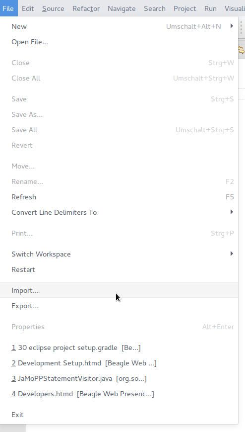
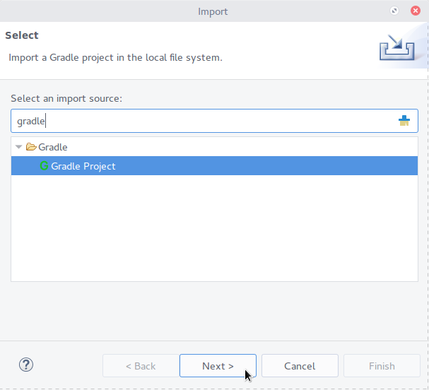
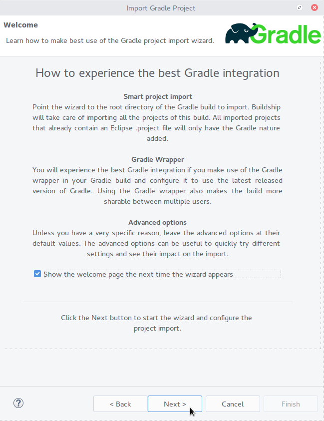
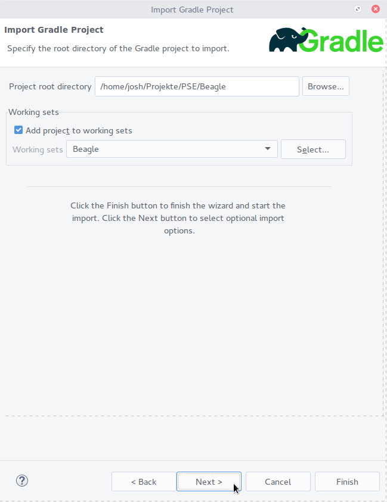
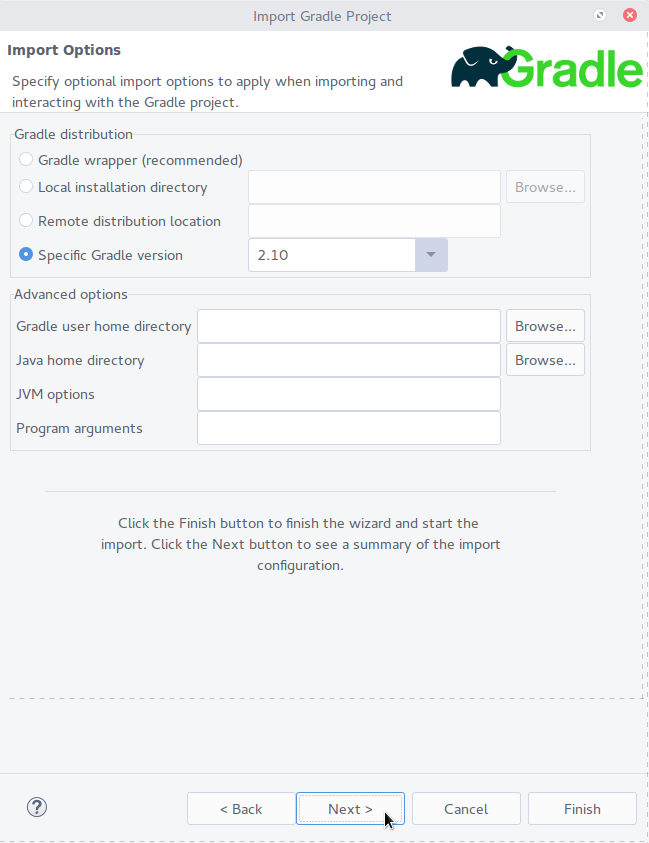
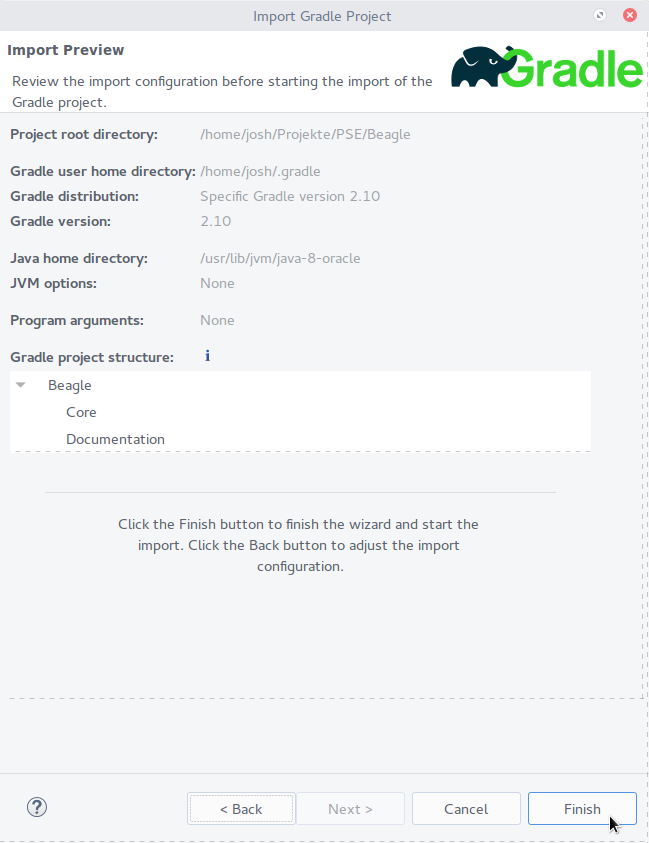

Development is done in Eclipse Mars for RCP and RAP Developers. Please work through this guide to correctly set up your development environment.
Required Eclipse plugins are:
anonymous:anonymous). Import it into your Eclipse workspace.anonymous:anonymous).
org.somox.metrics.dsl.tests and org.somox.metrics.testsThe project is built using Gradle 2.10. It can be downloaded here. Ubuntu users can use this PPA.
We use the default commands: gradle build (or simply gradle) to test and build, gradle test to only run tests. Run gradle tasks to see all available tasks.
Please import the root project through Buildship into Eclipse. Make sure to select “Specific Gradle version: 2.10”. This will import all subprojects as well:
 Import…" class="small">     Parts of the documentation are written in LaTeX using LyX.
In order to render PDFs, the following steps need to be performed.
Ubuntu users can try to run the deployment install script at buildSrc/src/deploy/bash/Install Doc.sh, which will execute all installation steps detailed below. Please note thatwhile the script offers great convenience, it was written to be used on a continuous integration server and might hence make settings that are not optimal for a private computer.
You’ll obviously first need to install LyX and LaTeX.
Download the SDQ thesis template and install it according to your LaTeX distribution.
On Ubuntu:
/usr/share/texmf/tex/latex/sdqthesis. For example: sudo cp -r Ausarbeitungs-Vorlage_SDQ_2014 /usr/share/texmf/tex/latex/sdqthesis`) sudo texhashOn Windows (with MiKTeX):
C:\Program Files (x86)\MiKTeX 2.9\tex\latex\misc\sdqthesis.You may remove the files thesis.tex and thesis.bib as well as the subfolder sections.
Install the LyX layout file from Documentation/Dependencies/sqthesis.layout.
~/.lyx/layouts, Windows: C:\Users\[User]\AppData\Roaming\LyX2.1\layoutsTools -> ReconfigureA (small!) subset of the required LaTeX packages are:
scrbook)inputenc, fontenc, etc.libertine and newtxmath)sourcesanspro)beramono)microtype)enumitem)breakcites)xindy)If you care for the full list, look it up yourself in sdqthesis.cls.
All required packages can be installed by installing thetexlive-latex-base, texlive-latex-recommended, texlive-latex-extra, texlive-fonts-extra, xindy, texlive-bibtex-extra and texlive-lang-german debian packages (you’ll likely have most of them installed already):
sudo apt-get install texlive-latex-base texlive-latex-recommended texlive-latex-extra texlive-fonts-extra texlive-lang-german texlive-bibtex-extra xindy
On Windows, you’ll likely use MiKTeX, which will install automatically all required packages automatically. However, you need to install Perl: ActivePerl. Make sure the checkbox “Add Perl to PATH”, which appeares during the installation process, is checked.
C:\Program Files (x86)\Umlet\Umlet.exe (Windows) or /opt/Umlet/ (Linux). (If you want to put it somewhere else, you have to adapt UmletRenderTask.goovy in the Documentation project’s buildSrc project.) UMLet is required to build the documentation.You may need to set the language in Tools -> Settings -> Language Settings -> Language to en to get English spell checking.
Other parts are written in plain Markdown. The Eclipse GitHub Flavored Markdown viewer plugin for Eclipse helps writing it. (*Hint:* Don’t give the plugin your GitHub credentials. Create a personal access token and change the API URL in the plugin’s settings: https://api.github.com/?access_token=PERSONAL_ACCESS_TOKEN)
Beagle uses Travis, a continuous integration service. It tests Pull Requests as well as all branches in the repository whenever changes occur.
You can enable Travis for your repository, too. This allows you to have automated tests for all your commits. It further generates all documentation documents for new commits. This is quite handy for pull requests, as you can simply post a link to the rendered file, making the reviewing process a whole lot easier.
To activate Travis:
repo scope is sufficient.GH_TOKEN. Paste the personal access token you created as value. Leave the “show in log” switch OFF!Done!